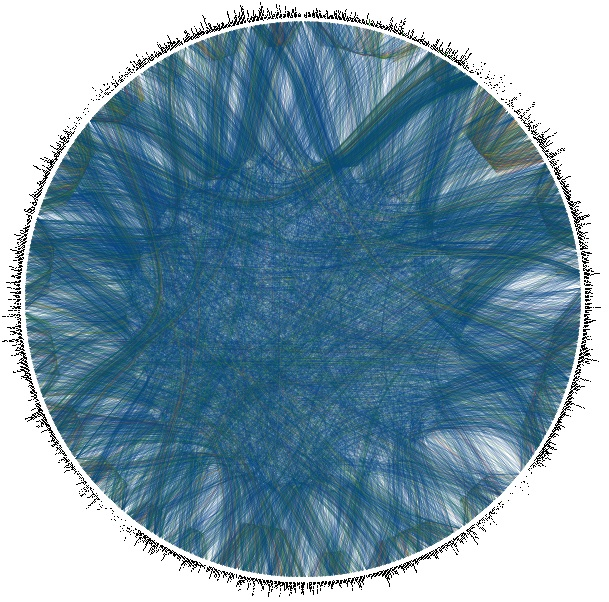
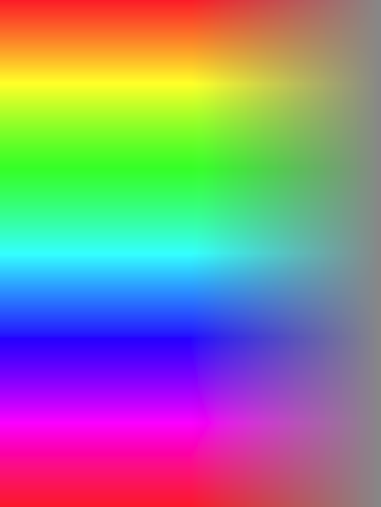

An Interactive Visualization of
Crosslinguistic
Colexification Patterns
VisLR Workshop - Visualization as added value
in the development, use and
evaluation of LRs
LREC 2014, Reykjavik
Thomas Mayer /
thomas.mayer@uni-marburg.de
Johann-Mattis List /
mattis.list@uni-marburg.de
Anselm Terhalle /
terhalle@phil.uni-duesseldorf.de
Matthias Urban /
m.urban@hum.leidenuniv.nl
Overview
- Introducing CLICS
- Visualization
- Case studies
- Conclusions and future work
Part I: Introduction
Complete network of CLICS
Part II: Visualization
Some advantages of
web-based visualizations
(cf. Murray 2010)
- Platform independent
- Accessible from any device with a browser supporting JavaScript
- No need to install additional software on the part of the user
- Links to external resources can be easily included
Interactive functionalities
- Force-directed graph layout for communities
- drag nodes to different positions where there is less overlap
- panning and zooming
- mouse over for more information on a certain node or edge
- World map showing all languages featured in a given colexification pattern
- Color coding for world regions
Implementation
- The visualization is implemented in JavaScript using the D3 library (Bostock et al., 2011)
- The force-directed graph is generated with the force() function from the d3.layout module.
- The layout implementation uses position Verlet integration for simple constraints (Dwyer, 2009).
- The dragging and panning functionalities of the graph are implemented with the drag() function from the d3.behavior module and the SVG transform and translate attributes.
Implementation (cont'd)
- The interactive world map is generated with the topojson package and makes use of the d3.geo projection module.
Color coding
- The color values for the world map gradient scale are computed from the two-dimensional geographical coordinates that are given as an input.
function cl2pix(c,l){
var TAU = 6.2831853
var L = l*0.61 + 0.09;
var angle = TAU/6.0 - c*TAU;
var r = l*0.311 + 0.125
var a = Math.sin(angle)*r;
var b = Math.cos(angle)*r;
return [L,a,b];
};
Color coding (cont'd)
- The actual HTML color code is generated with the function d3.lab from the D3 library, which takes the three values for [L,a,b] as input.
- The main reason for choosing the L*a*b* color space is a smoother transition between different color hues without any visible boundaries.
- For the coloring of the language families, the background colors are generated with the categorical scale functions of the d3.scale module.
HSV vs L*a*b color space
Color scale

Part III: Case studies
Part III: Conclusions and future work
Conclusions
- The size and complexity of today’s LRs call for a data preparation pipeline that enables researchers to find meaningful patterns among the multitude of different factors that can be taken into consideration.
- Such a data preparation pipeline necessarily consists of two major parts:
- methods and techniques from data mining or computational linguistics help to detect basic trends or groups of similar objects in the search space.
- the resulting groups or trends are mapped to visual variables in order to make interesting observations readily accessible to human perception.
Future work
- we plan to enhance the visualization tool with further interactive components that allow for a better overview of the complete network of colexifications and facilitate the detection of genealogical or areal trends in the database.
- we intend to equip the user interface with further interactive components that allow users to explore the database from different perspectives (e.g., compare individual languages in terms of shared lexical associations).
The CLICS website
- Featuring all functionalities presented in this talk
- All communities and connections available as URLs
- Networks can be exported as SVG
- Featuring tabular representations for colexification patterns